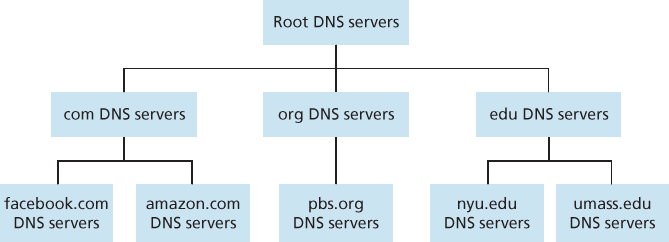
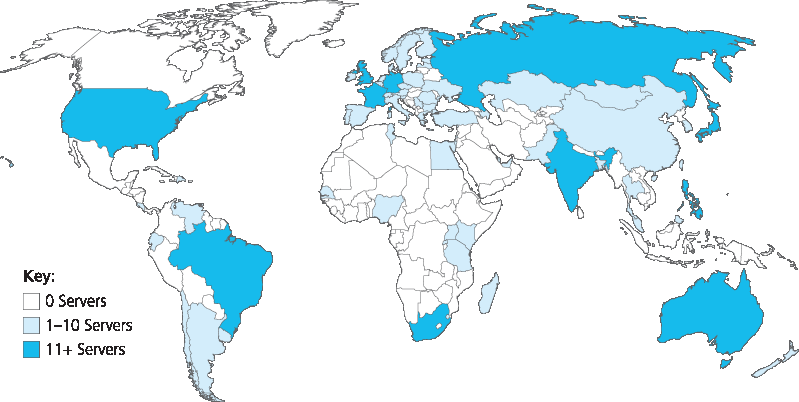
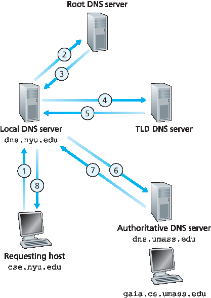
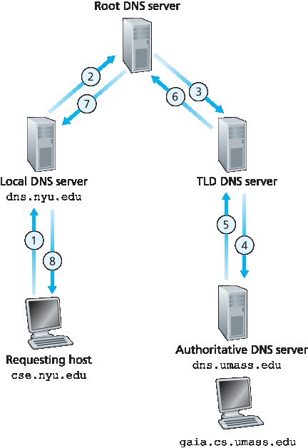

我们将在 第4章 中详细讨论 IP 地址，但现在简单介绍一下。一个 IP 地址由四个字节组成，具有严格的分层结构。IP 地址看起来像 121.7.106.83，其中每个句点将四个十进制表示的字节（0 到 255）分隔开。IP 地址具有层次性，因为从左到右扫描地址时，可以获得主机在互联网上越来越具体的位置（即其所在的网络，在网络的网络中）。类似地，从下往上扫描邮寄地址，也会获得收件人所在地的逐层具体信息。
We human beings can be identified in many ways. For example, we can be identified by the names that appear on our birth certificates. We can be identified by our social security numbers. We can be identified by our driver’s license numbers. Although each of these identifiers can be used to identify people, within a given context one identifier may be more appropriate than another. For example, the computers at the IRS (the infamous tax-collecting agency in the United States) prefer to use fixed-length social security numbers rather than birth certificate names. On the other hand, ordinary people prefer the more mnemonic birth certificate names rather than social security numbers. (Indeed, can you imagine saying, “Hi. My name is 132-67-9875. Please meet my husband, 178-87-1146.”)
Just as humans can be identified in many ways, so too can Internet hosts. One identifier for a host is its hostname. Hostnames—such as www.facebook.com , www.google.com , gaia.cs.umass.edu —are mnemonic and are therefore appreciated by humans. However, hostnames provide little, if any, information about the location within the Internet of the host. (A hostname such as www.eurecom.fr , which ends with the country code .fr, tells us that the host is probably in France, but doesn’t say much more.) Furthermore, because hostnames can consist of variable-length alphanumeric characters, they would be difficult to process by routers. For these reasons, hosts are also identified by so-called IP addresses.
We discuss IP addresses in some detail in Chapter 4 , but it is useful to say a few brief words about them now. An IP address consists of four bytes and has a rigid hierarchical structure. An IP address looks like 121.7.106.83, where each period separates one of the bytes expressed in decimal notation from 0 to 255. An IP address is hierarchical because as we scan the address from left to right, we obtain more and more specific information about where the host is located in the Internet (that is, within which network, in the network of networks). Similarly, when we scan a postal address from bottom to top, we obtain more and more specific information about where the addressee is located.
我们刚刚看到，有两种方法可以识别主机——通过主机名和 IP 地址。人类更喜欢助记性的主机名标识符，而路由器则更喜欢固定长度、具有层次结构的 IP 地址。为了协调这些偏好，我们需要一个将主机名转换为 IP 地址的目录服务。这正是互联网的 域名系统（DNS） 的主要任务。DNS 是（1）一个由 DNS 服务器 构成的分层分布式数据库，（2）一个允许主机查询该分布式数据库的应用层协议。DNS 服务器通常是在 UNIX 机器上运行的 Berkeley Internet Name Domain (BIND) 软件 [BIND 2016]。DNS 协议运行在 UDP 上，使用端口号 53。
DNS 通常被其他应用层协议调用（包括 HTTP 和 SMTP）以将用户提供的主机名转换为 IP 地址。例如，设想某用户主机上运行的浏览器（即 HTTP 客户端）请求 URL www.someschool.edu/index.html。为了使用户主机能够向 Web 服务器 www.someschool.edu 发送 HTTP 请求消息，它必须首先获取 www.someschool.edu 的 IP 地址。具体过程如下：
同一台用户主机运行 DNS 应用程序的客户端部分。
浏览器从 URL 中提取主机名 www.someschool.edu，并将主机名传递给 DNS 应用程序的客户端。
DNS 客户端向 DNS 服务器发送包含主机名的查询。
DNS 客户端最终收到一个回复，其中包含主机名对应的 IP 地址。
一旦浏览器从 DNS 获取 IP 地址，它就可以在该地址的 80 端口与 HTTP 服务器进程建立 TCP 连接。
从该例中我们看到，DNS 给使用它的互联网应用增加了额外的延迟——有时还相当可观。幸运的是，正如下文所述，所需的 IP 地址通常会被缓存在“附近”的 DNS 服务器中，这有助于减少 DNS 网络流量和平均 DNS 延迟。
邮件服务器别名。显然，我们希望电子邮件地址具有助记性。例如，如果 Bob 使用 Yahoo Mail，那么他的电子邮件地址可能是 bob@yahoo.mail。然而 Yahoo 邮件服务器的主机名可能比 yahoo.com 更复杂且不具助记性（例如，其规范主机名可能是 relay1.west-coast.yahoo.com）。邮件应用程序可以调用 DNS，根据提供的别名主机名获取规范主机名及其 IP 地址。事实上，MX 记录（见下文）允许公司的邮件服务器和 Web 服务器具有相同的（别名）主机名；例如，一家公司的 Web 服务器和邮件服务器都可以称为 enterprise.com。
负载分担。DNS 也用于在多个副本服务器之间进行负载分担，例如多个副本 Web 服务器。像 cnn.com 这样的繁忙站点部署在多个服务器上，每台服务器运行在不同的终端系统上，具有不同的 IP 地址。对于副本 Web 服务器，一组 IP 地址关联到一个规范主机名。DNS 数据库包含这组 IP 地址。当客户端查询该主机名时，DNS 服务器返回所有 IP 地址，并在每次响应中旋转地址的顺序。因为客户端通常将其 HTTP 请求发送到返回列表中的第一个地址，所以 DNS 轮换机制可以将流量分布到各个副本服务器。电子邮件服务也使用 DNS 轮换，以便多个邮件服务器具有相同的别名。此外，内容分发公司（如 Akamai）使用 DNS 的方式更加复杂 [Dilley 2002]，以提供 Web 内容分发（参见 第2.6.3节）。
We have just seen that there are two ways to identify a host—by a hostname and by an IP address. People prefer the more mnemonic hostname identifier, while routers prefer fixed-length, hierarchically structured IP addresses. In order to reconcile these preferences, we need a directory service that
translates hostnames to IP addresses. This is the main task of the Internet’s domain name system (DNS). The DNS is (1) a distributed database implemented in a hierarchy of DNS servers, and (2) an application-layer protocol that allows hosts to query the distributed database. The DNS servers are often
UNIX machines running the Berkeley Internet Name Domain (BIND) software [BIND 2016] . The DNS protocol runs over UDP and uses port 53.
DNS is commonly employed by other application-layer protocols—including HTTP and SMTP to translate user-supplied hostnames to IP addresses. As an example, consider what happens when a browser (that is, an HTTP client), running on some user’s host, requests the URL www.someschool.edu/index.html. In order for the user’s host to be able to send an HTTP request message to the Web server www.someschool.edu, the user’s host must first obtain the IP address of www.someschool.edu. This is done as follows.
The same user machine runs the client side of the DNS application.
The browser extracts the hostname, www.someschool.edu, from the URL and passes the hostname to the client side of the DNS application.
The DNS client sends a query containing the hostname to a DNS server.
The DNS client eventually receives a reply, which includes the IP address for the hostname.
Once the browser receives the IP address from DNS, it can initiate a TCP connection to the HTTP server process located at port 80 at that IP address.
We see from this example that DNS adds an additional delay—sometimes substantial—to the Internet applications that use it. Fortunately, as we discuss below, the desired IP address is often cached in a “nearby” DNS server, which helps to reduce DNS network traffic as well as the average DNS delay.
DNS provides a few other important services in addition to translating hostnames to IP addresses:
Host aliasing. A host with a complicated hostname can have one or more alias names. For example, a hostname such as relay1.west-coast.enterprise.com could have, say, two aliases such as enterprise.com and www.enterprise.com. In this case, the hostname relay1.west-coast.enterprise.com is said to be a canonical hostname. Alias hostnames, when present, are typically more mnemonic than canonical hostnames. DNS can be invoked by an application to obtain the canonical hostname for a supplied alias hostname as well as the IP address of the host.
Mail server aliasing. For obvious reasons, it is highly desirable that e-mail addresses be mnemonic. For example, if Bob has an account with Yahoo Mail, Bob’s e-mail address might be as simple as bob@yahoo.mail. However, the hostname of the Yahoo mail server is more complicated and much less mnemonic than simply yahoo.com (for example, the canonical hostname might be something like relay1.west-coast.yahoo.com ). DNS can be invoked by a mail application to obtain the canonical hostname for a supplied alias hostname as well as the IP address of the host. In fact, the MX record (see below) permits a company’s mail server and Web server to have identical (aliased) hostnames; for example, a company’s Web server and mail server can both be called enterprise.com .
Load distribution. DNS is also used to perform load distribution among replicated servers, such as replicated Web servers. Busy sites, such as cnn.com, are replicated over multiple servers, with each server running on a different end system and each having a different IP address. For replicated Web servers, a set of IP addresses is thus associated with one canonical hostname. The DNS database contains this set of IP addresses. When clients make a DNS query for a name mapped to a set of addresses, the server responds with the entire set of IP addresses, but rotates the ordering of the addresses within each reply. Because a client typically sends its HTTP request message to the IP address that is listed first in the set, DNS rotation distributes the traffic among the replicated servers. DNS rotation is also used for e-mail so that multiple mail servers can have the same alias name. Also, content distribution companies such as Akamai have used DNS in more sophisticated ways [Dilley 2002] to provide Web content distribution (see Section 2.6.3 ).
The DNS is specified in RFC 1034 and RFC 1035, and updated in several additional RFCs. It is a complex system, and we only touch upon key aspects of its operation here. The interested reader is referred to these RFCs and the book by Albitz and Liu [Albitz 1993] ; see also the retrospective paper [Mockapetris 1988], which provides a nice description of the what and why of DNS, and [Mockapetris 2005].
小技巧
实践中的原理(PRINCIPLES IN PRACTICE)
DNS：通过客户端-服务器范式实现的关键网络功能
和 HTTP、FTP、SMTP 一样，DNS 协议是一个应用层协议，因为它（1）在通信端系统之间基于客户端-服务器范式运行，（2）依赖底层端到端传输协议在通信端系统之间传输 DNS 消息。但从另一个角度看，DNS 的角色与 Web、文件传输和电子邮件应用程序非常不同。与这些应用程序不同，DNS 并不是一个用户直接交互的应用程序。相反，DNS 提供了一个核心互联网功能——即为用户应用和互联网中的其他软件将主机名转换为其底层 IP 地址。我们在 第1.2节 中指出，互联网架构的大部分复杂性位于网络“边缘”。DNS 使用位于网络边缘的客户端和服务器实现关键的名称到地址转换过程，是这一设计理念的又一例证。
DNS: CRITICAL NETWORK FUNCTIONS VIA THE CLIENT-SERVER PARADIGM
Like HTTP, FTP, and SMTP, the DNS protocol is an application-layer protocol since it (1) runs between communicating end systems using the client-server paradigm and (2) relies on an underlying end-to-end transport protocol to transfer DNS messages between communicating end systems. In another sense, however, the role of the DNS is quite different from Web, file transfer, and e-mail applications. Unlike these applications, the DNS is not an application with which a user directly interacts. Instead, the DNS provides a core Internet function—namely, translating hostnames to their underlying IP addresses, for user applications and other software in the Internet. We noted in Section 1.2 that much of the complexity in the Internet architecture is located at the “edges” of the network. The DNS, which implements the critical name-to- address translation process using clients and servers located at the edge of the network, is yet another example of that design philosophy.
现在我们给出一个关于 DNS 如何工作的高层次概述。我们的讨论将聚焦于主机名到 IP 地址的转换服务。
假设用户主机上运行的某个应用程序（例如 Web 浏览器或邮件阅读器）需要将主机名转换为 IP 地址。该应用程序会调用 DNS 的客户端部分，并指定需要转换的主机名。（在许多基于 UNIX 的机器上，gethostbyname() 是应用程序用来执行此转换的函数调用。）随后，用户主机中的 DNS 接管该请求，并将查询消息发送到网络中。所有的 DNS 查询和回复消息都通过 UDP 数据报在 53 端口上传输。在经历了从毫秒到几秒不等的延迟后，用户主机中的 DNS 会收到 DNS 回复消息，其中包含所需的映射关系。该映射随后传递给调用该服务的应用程序。因此，从用户主机中调用应用程序的视角来看，DNS 就像一个黑盒，提供一个简单、直接的转换服务。但实际上，实现该服务的黑盒是复杂的，它由分布在全球的大量 DNS 服务器组成，以及一个定义 DNS 服务器与查询主机之间如何通信的应用层协议。
一个简单的 DNS 设计是使用一个包含所有映射关系的 DNS 服务器。在这种集中式设计中，客户端只需将所有查询发送到这台 DNS 服务器，DNS 服务器则直接向查询客户端响应。尽管这种设计的简单性颇具吸引力，但它并不适用于当今拥有大量（且不断增长）主机的互联网。集中式设计存在的问题包括：
单点故障。如果该 DNS 服务器宕机，整个互联网也随之瘫痪！
流量负载过大。一台 DNS 服务器需要处理来自数亿主机产生的所有 HTTP 请求和电子邮件消息的 DNS 查询。
中心数据库距离过远。单个 DNS 服务器不可能“靠近”所有查询客户端。如果我们将这台 DNS 服务器设置在纽约市，那么来自澳大利亚的所有查询都必须穿越半个地球，可能还要通过速度慢、拥堵的链路，这将导致显著的延迟。
维护困难。该 DNS 服务器必须记录所有互联网主机的信息。这个集中式数据库不仅会非常庞大，而且需要频繁更新以包含每一台新主机。
总之，将所有数据集中到一台 DNS 服务器上的数据库是无法扩展的。因此，DNS 从设计上就是分布式的。事实上，DNS 是一个展示如何在互联网中实现分布式数据库的精彩案例。
We now present a high-level overview of how DNS works. Our discussion will focus on the hostname-to-IP-address translation service.
Suppose that some application (such as a Web browser or a mail reader) running in a user’s host needs to translate a hostname to an IP address. The application will invoke the client side of DNS, specifying the hostname that needs to be translated. (On many UNIX-based machines, gethostbyname() is the function call that an application calls in order to perform the translation.) DNS in the user’s host then takes over, sending a query message into the network. All DNS query and reply messages are sent within UDP datagrams to port 53. After a delay, ranging from milliseconds to seconds, DNS in the user’s host receives a DNS reply message that provides the desired mapping. This mapping is then passed to the invoking application. Thus, from the perspective of the invoking application in the user’s host, DNS is a black box providing a simple, straightforward translation service. But in fact, the black box that implements the service is complex, consisting of a large number of DNS servers distributed around the globe, as well as an application-layer protocol that specifies how the DNS servers and querying hosts communicate.
A simple design for DNS would have one DNS server that contains all the mappings. In this centralized design, clients simply direct all queries to the single DNS server, and the DNS server responds directly to the querying clients. Although the simplicity of this design is attractive, it is inappropriate for today’s Internet, with its vast (and growing) number of hosts. The problems with a centralized design include:
A single point of failure. If the DNS server crashes, so does the entire Internet!
Traffic volume. A single DNS server would have to handle all DNS queries (for all the HTTP requests and e-mail messages generated from hundreds of millions of hosts).
Distant centralized database. A single DNS server cannot be “close to” all the querying clients. If we put the single DNS server in New York City, then all queries from Australia must travel to the other side of the globe, perhaps over slow and congested links. This can lead to significant delays.
Maintenance. The single DNS server would have to keep records for all Internet hosts. Not only would this centralized database be huge, but it would have to be updated frequently to account for every new host.
In summary, a centralized database in a single DNS server simply doesn’t scale. Consequently, the DNS is distributed by design. In fact, the DNS is a wonderful example of how a distributed database can be implemented in the Internet.
为了解决可扩展性问题，DNS 使用了大量服务器，这些服务器按层次结构组织，并分布在世界各地。没有任何一台 DNS 服务器拥有所有主机的全部映射关系。相反，映射关系被分布存储在 DNS 服务器之间。粗略地说，DNS 服务器可分为三类：根 DNS 服务器、顶级域（TLD）DNS 服务器和权威 DNS 服务器，这些服务器构成了如 图 2.17 所示的层次结构。为了理解这三类服务器如何交互，假设某个 DNS 客户端希望获取主机名 www.amazon.com 的 IP 地址。大致流程如下：客户端首先联系某个根服务器，根服务器返回 com 顶级域的 TLD 服务器的 IP 地址。然后，客户端联系这些 TLD 服务器中的一个，TLD 服务器返回 amazon.com 的权威服务器的 IP 地址。最后，客户端联系 amazon.com 的权威服务器，该服务器返回主机名 www.amazon.com 的 IP 地址。我们稍后将更详细地检查这一 DNS 查询过程。但首先让我们更深入了解这三类 DNS 服务器：

图 2.17 DNS 服务器层级结构的一部分
根 DNS 服务器。全球分布有超过 400 个根名称服务器。图 2.18 显示了设有根名称服务器的国家，深色区域表示有超过十台的国家。这些根名称服务器由 13 个不同的组织管理。所有根服务器的完整列表、管理机构及其 IP 地址见 [Root Servers 2016]。根名称服务器提供 TLD 服务器的 IP 地址。
顶级域（TLD）服务器。每个顶级域——如 com、org、net、edu 和 gov，以及所有国家的顶级域（如 uk、fr、ca 和 jp）——都有一个 TLD 服务器（或服务器集群）。Verisign Global Registry Services 公司维护 com 顶级域的 TLD 服务器，Educause 公司维护 edu 顶级域的 TLD 服务器。TLD 所需的网络基础设施可以非常庞大和复杂；关于 Verisign 网络的精彩概述见 [Osterweil 2012]。所有顶级域的列表见 [TLD list 2016]。TLD 服务器提供权威 DNS 服务器的 IP 地址。

图 2.18 2016 年的 DNS 根服务器
权威 DNS 服务器。每个在互联网上拥有公共访问主机（如 Web 服务器和邮件服务器）的组织必须提供可以公开访问的 DNS 记录，将这些主机的名称映射为 IP 地址。组织的权威 DNS 服务器保存这些 DNS 记录。组织可以选择自行部署权威 DNS 服务器来保存这些记录；也可以付费将记录托管在某服务提供商的权威 DNS 服务器中。大多数大学和大型公司都部署并维护自己的主权威和从权威 DNS 服务器（备份）。
根、TLD 和权威 DNS 服务器共同构成了如 图 2.17 所示的 DNS 服务器层级结构。还有另一种重要的 DNS 服务器类型，称为 本地 DNS 服务器。本地 DNS 服务器并不严格属于该层级结构的一部分，但却是 DNS 架构中的核心组成部分。每个 ISP（无论是家庭 ISP 还是机构 ISP）都有一个本地 DNS 服务器（也称为默认名称服务器）。当主机连接到 ISP 时，ISP 会提供其一个或多个本地 DNS 服务器的 IP 地址（通常通过 DHCP，见 第4章）。在 Windows 或 UNIX 系统中查看网络状态窗口即可轻松获知本地 DNS 服务器的 IP 地址。本地 DNS 服务器通常“靠近”主机。对于机构 ISP，本地 DNS 服务器可能与主机位于同一个局域网内；对于家庭 ISP，通常相隔不超过几个路由器。当主机发出 DNS 查询时，该查询会发送给本地 DNS 服务器，本地服务器作为代理将查询转发到 DNS 层级结构中，如下文将更详细讨论。
我们来看一个简单的例子。假设主机 cse.nyu.edu 想获取 gaia.cs.umass.edu 的 IP 地址。又假设 cse.nyu.edu 的本地 DNS 服务器为 dns.nyu.edu，而 gaia.cs.umass.edu 的权威 DNS 服务器为 dns.umass.edu。如 图 2.19 所示，主机 cse.nyu.edu 首先将 DNS 查询消息发送给其本地 DNS 服务器 dns.nyu.edu。查询消息包含待解析的主机名，即 gaia.cs.umass.edu。本地 DNS 服务器将查询消息转发给一个根 DNS 服务器。根 DNS 服务器识别出 edu 后缀，并将负责 edu 的 TLD 服务器的 IP 地址列表返回给本地 DNS 服务器。然后本地服务器将查询转发给这些 TLD 服务器之一。TLD 服务器识别出 umass.edu 后缀，并返回马萨诸塞大学的权威 DNS 服务器 IP 地址，即 dns.umass.edu。最后，本地 DNS 服务器将查询消息直接发送至 dns.umass.edu，后者返回 gaia.cs.umass.edu 的 IP 地址。注意，在此例中，为了获取一个主机名的映射，总共发送了八个 DNS 消息：四个查询消息和四个回复消息！我们将很快看到，DNS 缓存如何减少这种查询流量。
前例假设 TLD 服务器知道主机名的权威 DNS 服务器。实际上，并非总是如此。TLD 服务器有时只知道一个中间 DNS 服务器，而该服务器知道目标主机名的权威 DNS 服务器。例如，再次假设马萨诸塞大学有一个校级 DNS 服务器 dns.umass.edu。又假设该校的每个院系都有自己的 DNS 服务器，并且每个院系的 DNS 服务器都对该系的主机名具有权威。在这种情况下，当中间 DNS 服务器 dns.umass.edu 接收到一个以 cs.umass.edu 结尾的主机名查询时，它会将 dns.cs.umass.edu 的 IP 地址返回给 dns.nyu.edu，而 dns.cs.umass.edu 是对所有以 cs.umass.edu 结尾的主机名具有权威的服务器。然后，本地 DNS 服务器 dns.nyu.edu 将查询发送给权威 DNS 服务器，该服务器返回期望的映射关系给本地 DNS 服务器，本地服务器再将其返回给请求主机。在这种情况下，总共发送了 10 个 DNS 消息！

图 2.19 各类 DNS 服务器之间的交互
图 2.19 所示示例同时使用了 递归查询 和 迭代查询。从 cse.nyu.edu 到 dns.nyu.edu 的查询为递归查询，因为它要求 dns.nyu.edu 代表其完成整个映射查询。但接下来的三个查询为迭代查询，因为所有的回复都是直接返回给 dns.nyu.edu 的。理论上，任何 DNS 查询都可以是递归的或迭代的。例如，图 2.20 展示了所有查询均为递归的 DNS 查询链。在实际中，查询通常遵循 图 2.19 的模式：从请求主机到本地 DNS 服务器的查询是递归的，其余查询是迭代的。
In order to deal with the issue of scale, the DNS uses a large number of servers, organized in a hierarchical fashion and distributed around the world. No single DNS server has all of the mappings for all of the hosts in the Internet. Instead, the mappings are distributed across the DNS servers. To a first approximation, there are three classes of DNS servers—root DNS servers, top-level domain (TLD) DNS servers, and authoritative DNS servers—organized in a hierarchy as shown in Figure 2.17. To understand how these three classes of servers interact, suppose a DNS client wants to determine the IP address for the hostname www.amazon.com. To a first approximation, the following events will take place. The client first contacts one of the root servers, which returns IP addresses for TLD servers for the top-level domain com. The client then contacts one of these TLD servers, which returns the IP address of an authoritative server for amazon.com. Finally, the client contacts one of the authoritative servers for amazon.com, which returns the IP address for the hostname www.amazon.com. We’ll soon examine this DNS lookup process in more detail. But let’s first take a closer look at these three classes of DNS servers:
Figure 2.17 Portion of the hierarchy of DNS servers
Root DNS servers. There are over 400 root name servers scattered all over the world. Figure 2.18 shows the countries that have root names servers, with countries having more than ten darkly shaded. These root name servers are managed by 13 different organizations. The full list of root name servers, along with the organizations that manage them and their IP addresses can be found at [Root Servers 2016] . Root name servers provide the IP addresses of the TLD servers.
Top-level domain (TLD) servers. For each of the top-level domains — top-level domains such as com, org, net, edu, and gov, and all of the country top-level domains such as uk, fr, ca, and jp — there is TLD server (or server cluster). The company Verisign Global Registry Services maintains the TLD servers for the com top-level domain, and the company Educause maintains the TLD servers for the edu top-level domain. The network infrastructure supporting a TLD can be large and complex; see [Osterweil 2012] for a nice overview of the Verisign network. See [TLD list 2016] for a list of all top-level domains. TLD servers provide the IP addresses for authoritative DNS servers.
Figure 2.18 DNS root servers in 2016
Authoritative DNS servers. Every organization with publicly accessible hosts (such as Web servers and mail servers) on the Internet must provide publicly accessible DNS records that map the names of those hosts to IP addresses. An organization’s authoritative DNS server houses these DNS records. An organization can choose to implement its own authoritative DNS server to hold these records; alternatively, the organization can pay to have these records stored in an authoritative DNS server of some service provider. Most universities and large companies implement and maintain their own primary and secondary (backup) authoritative DNS server.
The root, TLD, and authoritative DNS servers all belong to the hierarchy of DNS servers, as shown in Figure 2.17 . There is another important type of DNS server called the local DNS server. A local DNS server does not strictly belong to the hierarchy of servers but is nevertheless central to the DNS architecture. Each ISP—such as a residential ISP or an institutional ISP—has a local DNS server (also called a default name server). When a host connects to an ISP, the ISP provides the host with the IP addresses of one or more of its local DNS servers (typically through DHCP, which is discussed in Chapter 4). You can easily determine the IP address of your local DNS server by accessing network status windows in Windows or UNIX. A host’s local DNS server is typically “close to” the host. For an institutional ISP, the local DNS server may be on the same LAN as the host; for a residential ISP, it is typically separated from the host by no more than a few routers. When a host makes a DNS query, the query is sent to the local DNS server, which acts a proxy, forwarding the query into the DNS server hierarchy, as we’ll discuss in more detail below.
Let’s take a look at a simple example. Suppose the host cse.nyu.edu desires the IP address of gaia.cs.umass.edu. Also suppose that NYU’s ocal DNS server for cse.nyu.edu is called dns.nyu.edu and that an authoritative DNS server for gaia.cs.umass.edu is called dns.umass.edu. As shown in Figure 2.19 , the host cse.nyu.edu first sends a DNS query message to its local DNS server, dns.nyu.edu. The query message contains the hostname to be translated, namely, gaia.cs.umass.edu. The local DNS server forwards the query message to a root DNS server. The root DNS server takes note of the edu suffix and returns to the local DNS server a list of IP addresses for TLD servers responsible for edu. The local DNS server then resends the query message to one of these TLD servers. The TLD server takes note of the umass.edu suffix and responds with the IP address of the authoritative DNS server for the University of Massachusetts, namely, dns.umass.edu. Finally, the local DNS server resends the query message directly to dns.umass.edu, which responds with the IP address of gaia.cs.umass.edu. Note that in this example, in order to obtain the mapping for one hostname, eight DNS messages were sent: four query messages and four reply messages! We’ll soon see how DNS caching reduces this query traffic.
Our previous example assumed that the TLD server knows the authoritative DNS server for the hostname. In general this not always true. Instead, the TLD server may know only of an intermediate DNS server, which in turn knows the authoritative DNS server for the hostname. For example, suppose again that the University of Massachusetts has a DNS server for the university, called dns.umass.edu. Also suppose that each of the departments at the University of Massachusetts has its own DNS server, and that each departmental DNS server is authoritative for all hosts in the department. In this case, when the intermediate DNS server, dns.umass.edu, receives a query for a host with a hostname ending with cs.umass.edu, it returns to dns.nyu.edu the IP address of dns.cs.umass.edu, which is authoritative for all hostnames ending with cs.umass.edu. The local DNS server dns.nyu.edu then sends the query to the authoritative DNS server, which returns the desired mapping to the local DNS server, which in turn returns the mapping to the requesting host. In this case, a total of 10 DNS messages are sent!
Figure 2.19 Interaction of the various DNS servers
The example shown in Figure 2.19 makes use of both recursive queries and iterative queries. The query sent from cse.nyu.edu to dns.nyu.edu is a recursive query, since the query asks dns.nyu.edu to obtain the mapping on its behalf. But the subsequent three queries are iterative since all of the replies are directly returned to dns.nyu.edu. In theory, any DNS query can be iterative or recursive. For example, Figure 2.20 shows a DNS query chain for which all of the queries are recursive. In practice, the queries typically follow the pattern in Figure 2.19: The query from the requesting host to the local DNS server is recursive, and the remaining queries are iterative.
到目前为止的讨论忽略了 DNS 缓存，而这是 DNS 系统中至关重要的一项功能。事实上，DNS 广泛使用 DNS 缓存以改善延迟性能，并减少在互联网上来回传递的 DNS 消息数量。DNS 缓存的思想非常简单。在查询链中，当 DNS 服务器收到一个 DNS 回复（例如包含主机名到 IP 地址的映射）时，它可以将该映射缓存在本地内存中。例如，在 图 2.19 中，每当本地 DNS 服务器 dns.nyu.edu 从某个 DNS 服务器接收到回复时，它都可以缓存回复中包含的任何信息。如果某个主机名/IP 地址对已经被缓存，并且 DNS 服务器收到该主机名的新查询，即使它不是该主机名的权威服务器，也可以直接提供所需的 IP 地址。由于主机及其主机名与 IP 地址的映射并非永久有效，DNS 服务器会在一段时间后丢弃缓存信息（通常设定为两天）。

图 2.20 DNS 中的递归查询
举例来说，假设主机 apricot.nyu.edu 向 dns.nyu.edu 查询主机名 cnn.com 的 IP 地址。此外，再假设几小时后，另一台 NYU 主机 kiwi.nyu.edu 也向 dns.nyu.edu 查询相同主机名。由于缓存的存在，本地 DNS 服务器可以立即将 cnn.com 的 IP 地址返回给这个第二个请求主机，而无需再次查询其他 DNS 服务器。本地 DNS 服务器还可以缓存 TLD 服务器的 IP 地址，从而允许它在查询链中绕过根 DNS 服务器。实际上，由于缓存的使用，除了极少数情况，根服务器几乎不会被访问。
Our discussion thus far has ignored DNS caching, a critically important feature of the DNS system. In truth, DNS extensively exploits DNS caching in order to improve the delay performance and to reduce the number of DNS messages ricocheting around the Internet. The idea behind DNS caching is very simple. In a query chain, when a DNS server receives a DNS reply (containing, for example, a mapping from a hostname to an IP
address), it can cache the mapping in its local memory. For example, in Figure 2.19, each time the local DNS server dns.nyu.edu receives a reply from some DNS server, it can cache any of the information contained in the reply. If a hostname/IP address pair is cached in a DNS server and another query arrives to the DNS server for the same hostname, the DNS server can provide the desired IP address, even if it is not authoritative for the hostname. Because hosts and mappings between hostnames and IP addresses are by no means permanent, DNS servers discard cached information after a period of time (often set to two days).
Figure 2.20 Recursive queries in DNS
As an example, suppose that a host apricot.nyu.edu queries dns.nyu.edu for the IP address for the hostname cnn.com. Furthermore, suppose that a few hours later, another NYU host, say, kiwi.nyu.edu, also queries dns.nyu.edu with the same hostname. Because of caching, the local DNS server will be able to immediately return the IP address of cnn.com to this second requesting host without having to query any other DNS servers. A local DNS server can also cache the IP addresses of TLD servers, thereby allowing the local DNS server to bypass the root DNS servers in a query chain. In fact, because of caching, root servers are bypassed for all but a very small fraction of DNS queries.
共同实现 DNS 分布式数据库的 DNS 服务器存储了 资源记录（RRs），其中包括提供主机名到 IP 地址映射的记录。每条 DNS 回复消息都携带一条或多条资源记录。本节和下一小节将简要概述 DNS 的资源记录和消息；更多细节可参见 [Albitz 1993] 或 DNS 的 RFC 文档 [ RFC 1034；[RFC 1035]]。
资源记录是一个四元组，包含以下字段：
(Name, Value, Type, TTL)
TTL 是该资源记录的生存时间（time to live）；它决定何时应将该记录从缓存中移除。在下面给出的记录示例中，我们忽略 TTL 字段。Name 和 Value 的含义取决于 Type：
若 Type=A，则 Name 是主机名， Value 是该主机名的 IP 地址。因此，Type A 记录提供标准的主机名到 IP 地址映射。例如， (relay1.bar.foo.com,145.37.93.126,A) 是一条 Type A 记录。
若 Type=NS，则 Name 是域名（如 foo.com）， Value 是知道如何获取该域中主机 IP 地址的权威 DNS 服务器的主机名。该记录用于将 DNS 查询沿查询链继续路由。例如， (foo.com,dns.foo.com,NS) 是一条 Type NS 记录。
若 Type=CNAME，则 Value 是别名主机名 Name 所对应的规范主机名。该记录可为查询主机提供某主机名的规范名称。例如， (foo.com,relay1.bar.foo.com,CNAME) 是一条 CNAME 记录。
若 Type=MX，则 Value 是邮件服务器的规范主机名，而 Name 是该邮件服务器的别名主机名。例如， (foo.com,mail.bar.foo.com,MX) 是一条 MX 记录。MX 记录允许邮件服务器的主机名使用简单的别名。注意，通过使用 MX 记录，公司可以为邮件服务器和其它服务器（例如其 Web 服务器）使用相同的别名主机名。DNS 客户端可通过查询 MX 记录获取邮件服务器的规范主机名，通过查询 CNAME 记录获取其他服务器的规范主机名。
如果某 DNS 服务器对某主机名具有权威性，则该服务器将包含该主机名的 Type A 记录。（即使不具有权威性，该服务器也可能在缓存中包含 Type A 记录。）如果服务器对某主机名不具备权威性，则该服务器将包含包含该主机名的域的 Type NS 记录；此外，还将包含一条 Type A 记录，为该 NS 记录中 Value 字段中的 DNS 服务器提供 IP 地址。例如，假设 edu 顶级域服务器对主机 gaia.cs.umass.edu 不具有权威性，则它将包含该主机所处域的记录，例如 (umass.edu,dns.umass.edu,NS)。该 edu 顶级域服务器还会包含一条将 DNS 服务器 dns.umass.edu 映射为 IP 地址的 Type A 记录，例如 (dns.umass.edu,128.119.40.111,A)。
The DNS servers that together implement the DNS distributed database store resource records (RRs), including RRs that provide hostname-to-IP address mappings. Each DNS reply message carries one or more resource records. In this and the following subsection, we provide a brief overview of DNS
resource records and messages; more details can be found in [Albitz 1993] or in the DNS RFCs [ RFC 1034 ; [RFC 1035]].
A resource record is a four-tuple that contains the following fields:
(Name, Value, Type, TTL)
TTL is the time to live of the resource record; it determines when a resource should be removed from a cache. In the example records given below, we ignore the TTL field. The meaning of Name and Value depend on Type:
If Type=A, then Name is a hostname and Value is the IP address for the hostname. Thus, a Type A record provides the standard hostname-to-IP address mapping. As an example, (relay1.bar.foo.com,145.37.93.126,A) is a Type A record.
If Type=NS, then Name is a domain (such as foo.com) and Value is the hostname of an authoritative DNS server that knows how to obtain the IP addresses for hosts in the domain. This record is used to route DNS queries further along in the query chain. As an example, (foo.com,dns.foo.com,NS) is a Type NS record.
If Type=CNAME, then Value is a canonical hostname for the alias hostname Name. This record can provide querying hosts the canonical name for a hostname. As an example, (foo.com,relay1.bar.foo.com,CNAME) is a CNAME record.
If Type=MX, then Value is the canonical name of a mail server that has an alias hostname Name. As an example, (foo.com,mail.bar.foo.com,MX) is an MX record. MX records allow the hostnames of mail servers to have simple aliases. Note that by using the MX record, a company can have the same aliased name for its mail server and for one of its other servers (such as its Web server). To obtain the canonical name for the mail server, a DNS client would query for an MX record; to obtain the canonical name for the other server, the DNS client would query for the CNAME record.
If a DNS server is authoritative for a particular hostname, then the DNS server will contain a Type A record for the hostname. (Even if the DNS server is not authoritative, it may contain a Type A record in its cache.) If a server is not authoritative for a hostname, then the server will contain a Type NS record for the domain that includes the hostname; it will also contain a Type A record that provides the IP
address of the DNS server in the Value field of the NS record. As an example, suppose an edu TLD server is not authoritative for the host gaia.cs.umass.edu. Then this server will contain a record for a domain that includes the host gaia.cs.umass.edu, for example, (umass.edu,dns.umass.edu,NS). The edu TLD server would also contain a Type A record, which maps the DNS server dns.umass.edu to an IP address, for example, (dns.umass.edu,128.119.40.111,A).
DNS 服务器的回复中的答案区域包含了与原始查询名称对应的资源记录。请记得每条资源记录中包含 Type （如 A、NS、CNAME、MX）、 Value 和 TTL。由于一个主机名可能对应多个 IP 地址（例如多个副本 Web 服务器），因此一个回复中可能包含多条资源记录。
权威区域包含其他权威服务器的记录。
附加区域包含其他有用的记录。例如，对 MX 查询的回复中的答案区域包含邮件服务器规范主机名的资源记录，附加区域则包含该邮件服务器规范主机名的 Type A 记录，从而提供其 IP 地址。
你是否想从你当前工作的主机上直接发送一条 DNS 查询消息到某台 DNS 服务器？这可以通过 nslookup 程序 轻松实现，大多数 Windows 和 UNIX 系统都提供该程序。例如，在 Windows 主机上，打开命令提示符，输入 “nslookup” 即可启动该程序。启动后，你可以向任何 DNS 服务器（根、TLD 或权威服务器）发送 DNS 查询。DNS 服务器返回回复消息后，nslookup 会以可读格式显示其中的记录。作为替代，你也可以访问一些允许远程使用 nslookup 的网站（只需在搜索引擎中输入 “nslookup” 即可找到）。本章结尾的 Wireshark 实验将允许你更深入地探索 DNS。
Earlier in this section, we referred to DNS query and reply messages. These are the only two kinds of DNS messages. Furthermore, both query and reply messages have the same format, as shown in Figure 2.21. The semantics of the various fields in a DNS message are as follows:
The first 12 bytes is the header section, which has a number of fields. The first field is a 16-bit
number that identifies the query. This identifier is copied into the reply message to a query, allowing the client to match received replies with sent queries. There are a number of flags in the flag field. A 1-bit query/reply flag indicates whether the message is a query (0) or a reply (1). A 1-bit authoritative flag is set in a reply message when a DNS server is an authoritative server for a queried name. A 1-bit recursion-desired flag is set when a client (host or DNS server) desires that the DNS server perform recursion when it doesn’t have the record. A 1-bit recursion-available field is set in a reply if the DNS server supports recursion. In the header, there are also four number-of fields. These fields indicate the number of occurrences of the four types of data sections that follow the header.
Figure 2.21 DNS message format
The question section contains information about the query that is being made. This section includes (1) a name field that contains the name that is being queried, and (2) a type field that indicates the type of question being asked about the name—for example, a host address associated with a name (Type A) or the mail server for a name (Type MX).
In a reply from a DNS server, the answer section contains the resource records for the name that was originally queried. Recall that in each resource record there is the Type (for example, A, NS, CNAME, and MX), the Value, and the TTL. A reply can return multiple RRs in the answer, since a hostname can have multiple IP addresses (for example, for replicated Web servers, as discussed earlier in this section).
The authority section contains records of other authoritative servers.
The additional section contains other helpful records. For example, the answer field in a reply to an MX query contains a resource record providing the canonical hostname of a mail server. The additional section contains a Type A record providing the IP address for the canonical hostname of the mail server.
How would you like to send a DNS query message directly from the host you’re working on to some DNS server? This can easily be done with the nslookup program, which is available from most Windows and UNIX platforms. For example, from a Windows host, open the Command Prompt and invoke the nslookup program by simply typing “nslookup.” After invoking nslookup, you can send a DNS query to any DNS server (root, TLD, or authoritative). After receiving the reply message from the DNS server, nslookup will display the records included in the reply (in a human-readable format). As an alternative to running nslookup from your own host, you can visit one of many Web sites that allow you to remotely employ nslookup. (Just type “nslookup” into a search engine and you’ll be brought to one of these sites.) The DNS Wireshark lab at the end of this chapter will allow you to explore the DNS in much more detail.
上述讨论聚焦于如何从 DNS 数据库中检索记录。那么这些记录最初是如何插入数据库的呢？我们通过一个具体的例子来说明。假设你刚创立了一家令人兴奋的新创业公司，名为 Network Utopia。你显然需要做的第一件事就是在某个注册商处注册域名 networkutopia.com。 注册商（registrar） 是一个商业机构，其职责是验证域名的唯一性，将其写入 DNS 数据库（如下所述），并向你收取少量费用。1999 年前，Network Solutions 一家垄断了 com、 net 和 org 域名的注册服务。而现在，有许多注册商展开竞争，并由互联网名称与数字地址分配机构（ICANN）负责认证。完整的注册商列表可在 http://www.internic.net 查询。
当你在某注册商处注册 networkutopia.com 时，还需提供主权威和从权威 DNS 服务器的名称与 IP 地址。假设它们分别是 dns1.networkutopia.com、 dns2.networkutopia.com，IP 地址分别为 212.2.212.1 和 212.212.212.2。注册商会确保将以下 Type NS 和 Type A 记录插入到 TLD com 服务器中。具体地，针对 networkutopia.com 的主权威服务器，注册商会将以下两条资源记录插入 DNS 系统：
(networkutopia.com, dns1.networkutopia.com, NS)
(dns1.networkutopia.com, 212.212.212.1, A)
你还需确保你的权威 DNS 服务器中包含以下记录：你网站 www.networkutopia.com 的 Type A 记录，以及你邮件服务器 mail.networkutopia.com 的 Type MX 记录。（直到最近，每台 DNS 服务器的内容都是静态配置的，例如由系统管理员通过配置文件设定。近年来，DNS 协议增加了 UPDATE 选项，允许通过 DNS 消息动态添加或删除数据库中的记录。详见 [RFC 2136] 与 [RFC 3007]。）
The discussion above focused on how records are retrieved from the DNS database. You might be wondering how records get into the database in the first place. Let’s look at how this is done in the context of a specific example. Suppose you have just created an exciting new startup company called Network Utopia. The first thing you’ll surely want to do is register the domain name networkutopia.com at a registrar. A registrar is a commercial entity that verifies the uniqueness of the domain name, enters the domain name into the DNS database (as discussed below), and collects a small fee from you for its services. Prior to 1999, a single registrar, Network Solutions, had a monopoly on domain name registration for com, net, and org domains. But now there are many registrars competing for customers, and the Internet Corporation for Assigned Names and Numbers (ICANN) accredits the various registrars. A complete list of accredited registrars is available at http://www.internic.net .
When you register the domain name networkutopia.com with some registrar, you also need to provide the registrar with the names and IP addresses of your primary and secondary authoritative DNS servers. Suppose the names and IP addresses are dns1.networkutopia.com, dns2.networkutopia.com, 212.2.212.1, and 212.212.212.2. For each of these two authoritative DNS servers, the registrar would then make sure that a Type NS and a Type A record are entered into the TLD com servers. Specifically, for the primary authoritative server for networkutopia.com , the registrar would insert the following two resource records into the DNS system:
(networkutopia.com, dns1.networkutopia.com, NS)
(dns1.networkutopia.com, 212.212.212.1, A)
You’ll also have to make sure that the Type A resource record for your Web server www.networkutopia.com and the Type MX resource record for your mail server mail.networkutopia.com are entered into your authoritative DNS servers. (Until recently, the contents of each DNS server were configured statically, for example, from a configuration file created by a system manager. More recently, an UPDATE option has been added to the DNS protocol to allow data to be dynamically added or deleted from the database via DNS messages. [RFC 2136] and [RFC 3007] specify DNS dynamic updates.)
聚焦安全(FOCUS ON SECURITY)
DNS 漏洞
我们已经看到，DNS 是互联网基础设施中的关键组成部分，许多重要服务（包括 Web 与电子邮件）无法在没有 DNS 的情况下运行。因此我们自然要问：DNS 是否可能受到攻击？它是否是不设防的目标，随时可能被击垮，进而导致大部分互联网应用瘫痪？
第一个想到的攻击类型是针对 DNS 服务器的 DDoS 带宽洪泛攻击（见 第 1.6 节）。例如，攻击者可以向每台 DNS 根服务器发送大量数据包，以致大多数合法 DNS 查询得不到响应。事实上，2002 年 10 月 21 日确实发生过一次大规模 DNS 根服务器 DDoS 攻击。攻击者利用僵尸网络，向 13 个 DNS 根服务器的 IP 地址发送大量 ICMP ping 消息。（ICMP 消息详见 第 5.6 节。目前只需知道 ICMP 数据包是特殊类型的 IP 数据报。）幸运的是，这场大规模攻击造成的损害极小，几乎没有影响用户的互联网体验。虽然攻击者成功地向根服务器发起了大量数据包，但多数根服务器受到包过滤保护，配置为始终阻止所有针对根服务器的 ICMP ping 消息。这些受保护的服务器因此得以正常运行。此外，大多数本地 DNS 服务器会缓存顶级域服务器的 IP 地址，使得查询过程通常可绕过 DNS 根服务器。
另一种更具破坏性的 DDoS 攻击可能是向顶级域服务器（如处理 .com 域名的服务器）发送洪水式 DNS 查询。这种攻击更难过滤，且 TLD 服务器不像根服务器那样容易绕过。但即便如此，本地 DNS 服务器的缓存也能在一定程度上缓解此类攻击的影响。
DNS 也可能遭受其它攻击。例如，中间人攻击中，攻击者拦截主机发出的查询并返回伪造的回复。在 DNS 投毒攻击中，攻击者向 DNS 服务器发送伪造回复，诱使其将虚假记录写入缓存。这些攻击可以用来将毫无戒心的 Web 用户重定向到攻击者网站。这类攻击的实施难度较高，因为它们需要拦截数据包或操控服务器，详见 [Skoudis 2006]。
总结来说，DNS 在面对攻击时展现出了惊人的鲁棒性。迄今为止，还未出现成功阻断 DNS 服务的攻击。
DNS VULNERABILITIES
We have seen that DNS is a critical component of the Internet infrastructure, with many important services—including the Web and e-mail—simply incapable of functioning without it. We therefore naturally ask, how can DNS be attacked? Is DNS a sitting duck, waiting to be knocked out of service, while taking most Internet applications down with it?
The first type of attack that comes to mind is a DDoS bandwidth-flooding attack (see Section 1.6 ) against DNS servers. For example, an attacker could attempt to send to each DNS root server a deluge of packets, so many that the majority of legitimate DNS queries never get answered. Such a large-scale DDoS attack against DNS root servers actually took place on October 21, 2002. In this attack, the attackers leveraged a botnet to send truck loads of ICMP ping messages to each of the 13 DNS root IP addresses. (ICMP messages are discussed in Section 5.6. For now, it suffices to know that ICMP packets are special types of IP datagrams.) Fortunately, this large-scale attack caused minimal damage, having little or no impact on users’ Internet experience. The attackers did succeed at directing a deluge of packets at the root servers. But many of the DNS root servers were protected by packet filters, configured to always block all ICMP ping messages directed at the root servers. These protected servers were thus spared and functioned as normal. Furthermore, most local DNS servers cache the IP addresses of top-level-domain servers, allowing the query process to often bypass the DNS root servers.
A potentially more effective DDoS attack against DNS would be send a deluge of DNS queries to top-level-domain servers, for example, to all the top-level-domain servers that handle the .com domain. It would be harder to filter DNS queries directed to DNS servers; and top-level-domain servers are not as easily bypassed as are root servers. But the severity of such an attack would be partially mitigated by caching in local DNS servers.
DNS could potentially be attacked in other ways. In a man-in-the-middle attack, the attacker intercepts queries from hosts and returns bogus replies. In the DNS poisoning attack, the attacker sends bogus replies to a DNS server, tricking the server into accepting bogus records into its cache. Either of these attacks could be used, for example, to redirect an unsuspecting Web user to the attacker’s Web site. These attacks, however, are difficult to implement, as they require intercepting packets or throttling servers [Skoudis 2006] .
In summary, DNS has demonstrated itself to be surprisingly robust against attacks. To date, there hasn’t been an attack that has successfully impeded the DNS service.
一旦以上步骤完成，人们就可以访问你的网站，并向你公司的员工发送电子邮件了。让我们通过验证这个过程来结束对 DNS 的讨论。这一验证也有助于巩固我们对 DNS 的理解。假设澳大利亚的 Alice 想要访问网页 www.networkutopia.com。如前所述，她的主机会首先向本地 DNS 服务器发送查询。本地 DNS 服务器随后联系一个 TLD com 服务器。（若未缓存任何 com TLD 服务器的地址，还需先联系根 DNS 服务器。）该 TLD 服务器包含注册商插入的 Type NS 与 Type A 记录。TLD com 服务器将包含这两条记录的回复返回给 Alice 的本地 DNS 服务器。本地服务器随后向 212.212.212.1 发送 DNS 查询，请求与 www.networkutopia.com 相应的 Type A 记录。该记录返回 Web 服务器的 IP 地址，例如 212.212.71.4，并由本地 DNS 服务器转交给 Alice 的主机。此时，Alice 的浏览器即可向主机 212.212.71.4 发起 TCP 连接，并通过该连接发送 HTTP 请求。哇！上网冲浪时的背后原来有这么多工作在进行！
Once all of these steps are completed, people will be able to visit your Web site and send e-mail to the employees at your company. Let’s conclude our discussion of DNS by verifying that this statement is true. This verification also helps to solidify what we have learned about DNS. Suppose Alice in Australia wants to view the Web page www.networkutopia.com. As discussed earlier, her host will first send a DNS query to her local DNS server. The local DNS server will then contact a TLD com server. (The local DNS server will also have to contact a root DNS server if the address of a TLD com server is not cached.) This TLD server contains the Type NS and Type A resource records listed above, because the registrar had these resource records inserted into all of the TLD com servers. The TLD com server sends a reply to Alice’s local DNS server, with the reply containing the two resource records. The local DNS server then sends a DNS query to 212.212.212.1, asking for the Type A record corresponding to www.networkutopia.com. This record provides the IP address of the desired Web server, say, 212.212.71.4, which the local DNS server passes back to Alice’s host. Alice’s browser can now initiate a TCP connection to the host 212.212.71.4 and send an HTTP request over the connection. Whew! There’s a lot more going on than what meets the eye when one surfs the Web!